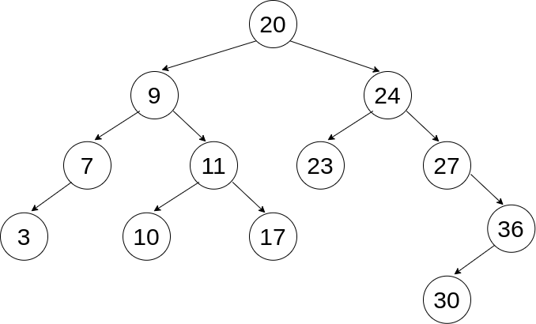

npm test) and check your work againstuse the anki cards!!
Problems to consider: 1. What are the requisite attributes of a Tree Node? Implement a Tree Node here:
class TreeNode = {
constructor(val) {
// Tree Node Attributes Here
}
}What logic is necessary to insert a node into a binary search tree? implement it here:
class BST { constructor() { this.root = null; }
insert(val, currentNode=this.root) { // your code here } }
Given a tree, be able to determine the order of each traversal type: 
Problems to consider:
What are the requisite attributes of a Graph Node? Implement a Graph Node here:
class GraphNode { constructor(val){ // your code here } }
Given a Graph implemented using an ADJACENCY LIST, traverse the graph using BFS and DFS
const adjacencyList = { ‘derek’:[‘selam’, ‘dean’], ‘joe’:[‘selam’], ‘selam’: [‘derek’, ‘joe’, ‘dean’, ‘jesse’], ‘dean’: [‘derek’, ‘jesse’], ‘sam’: [‘jen’], ‘jesse’: [‘selam’, ‘evan’], ‘jen’:[‘sam’], ‘javier’:[‘jen’], ‘chris’:[], ‘evan’: [‘jesse’], };
write a function that traverses this list from one name to another name (pick 2) and returns a list of the names it passes along the way using BFS and DFS:
function breadthFirstSearch(startingName, targetName) {
// YOUR CODE HERE
}
function depthFirstSearch(startingName, targetName) {
// YOUR CODE HERE
}Given a NODE implementation of a Graph, traverse the graph using BFS and DFS
// Practice for this implementation can be found on the project from WEDNESDAY // graphs-intro-project
This is optional additional information! I’ve still included it here since it is listed on the AAO platform, but know that this material is more in depth than you need to know.
Starting a Connection
traceroute to show routes between your computer and other computers.